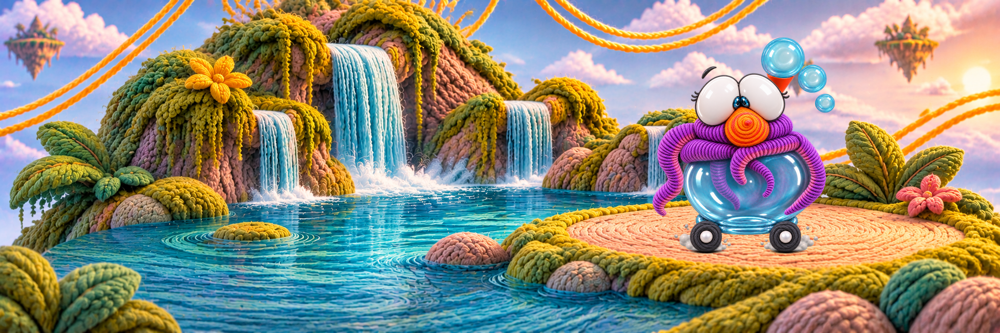

El trato diferente

PARA PENSAR JUNTOS
¿Por qué creemos saber lo que alguien puede hacer solo por cómo se ve?
*Elige una opción para continuar
Reflexión según la edad
Elige una opción para leer la reflexión.

PARA PENSAR JUNTOS
*Elige una opción para continuar
Reflexión según la edad